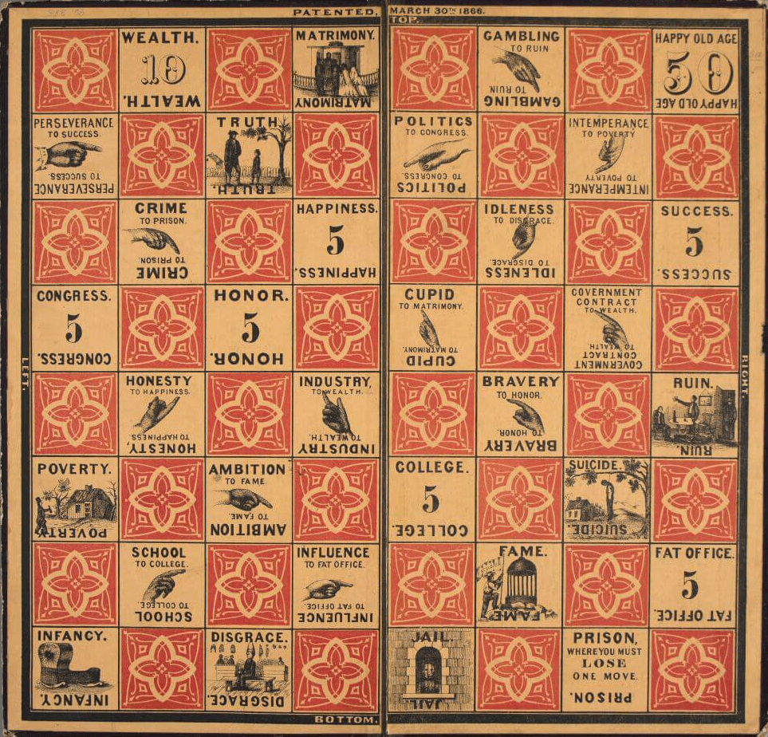
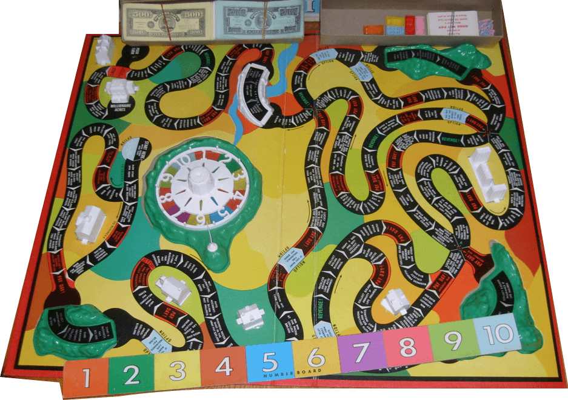
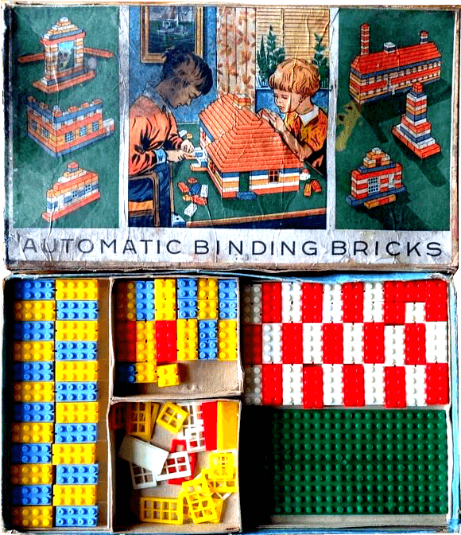
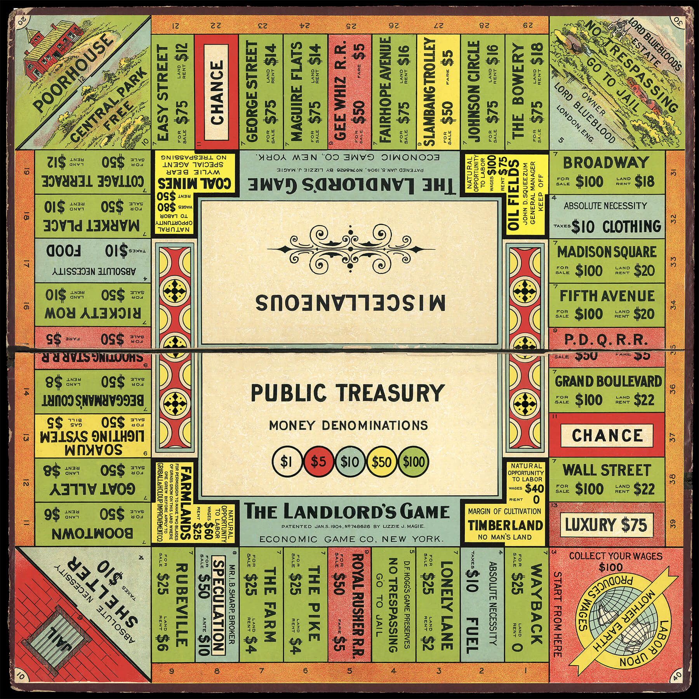
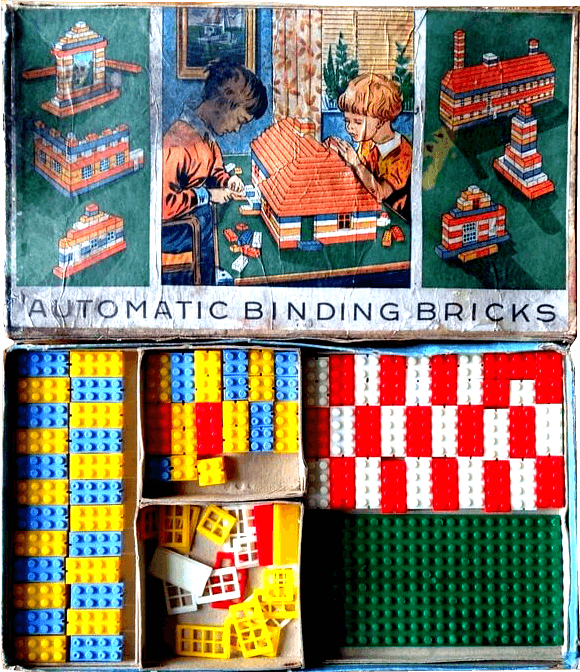
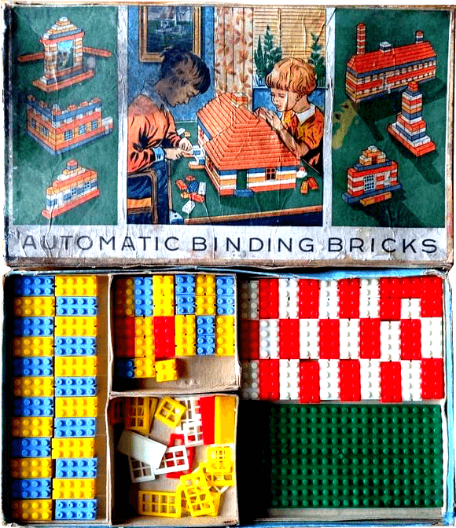

Did you know that some of our favorite childhood games are actually knock-offs of decades-old designs? In honor of Game Day, here are some the original versions of 3 popular games. What do you thing? Are the remakes as good as the originals?
1. The Game of Life (1860/1960)

The Checkered Game of Life (1860, left) was meant to teach morals. The very popular game was played with a spinner, much like a top. Milton reimagined it in 1960 (right). They kept the spinner, building one into the board, but wisely took out the suicide square. Photo courtesy of The Strong.
2. LEGOs (1939/1949)
Kiddicraft Self-Locking Blocks (1939, left) were the first plastic building blocks. After better plastic molds came out in 1949, LEGO, a wooden toy company, released Automatic Binding Bricks (right), now simply known as LEGOs. Photo courtesy of CataWiki.
3. Monopoly (1903/1935)
The Landlord's Game (1903, left) was popular for decades. The patent expired in 1935 and Parker Brothers released Monopoly (right) the same year and took over in popularity. That's capitalism for you.
Tweet
{kind=link}
{kind=link}
 

{kind=link}
{kind=link}
{kind=link}
{kind=link}